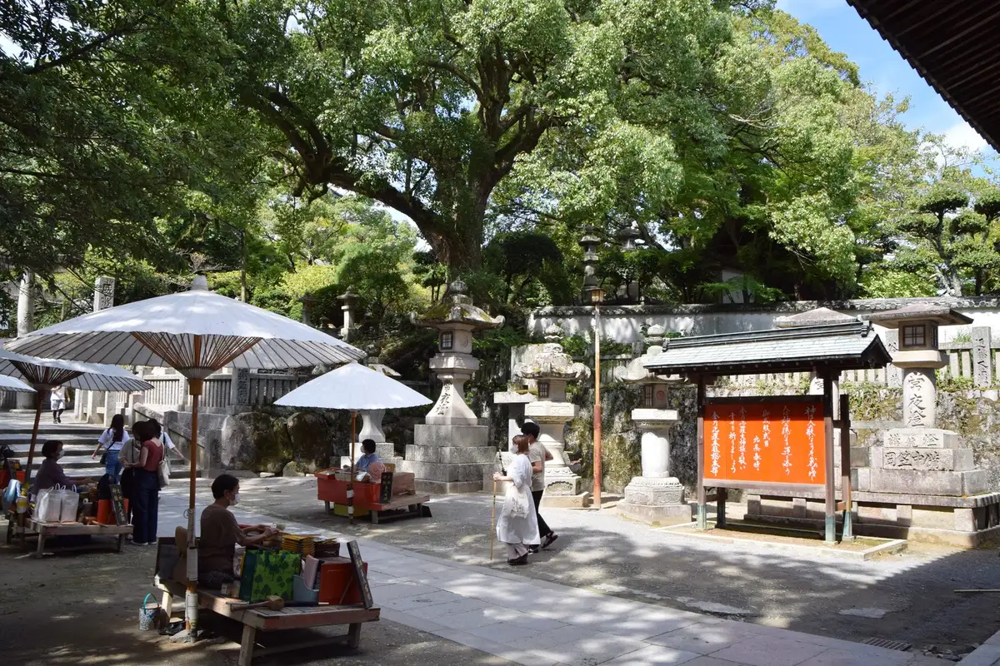
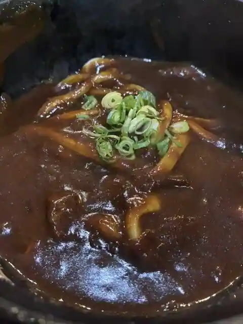

Japan / Kagawa / Kotohira
Kotohira · Kagawa
Kotohira
Highlighted on the Kagawa map.

Kotohira Town Hall · Tourism site

Sights · Things to do · Places to eat · Places to stay · Day-to-day services
Nearby in Kagawa: ← Kanonji · Manno →
Other towns: Ayagawa · Higashikagawa · Kanonji · Manno · Marugame · Miki · Mitoyo · Naoshima · Sakaide · Sanuki · Shodoshima · Tadotsu · Takamatsu · Tonosho · Utazu · Zentsuji
All towns in Kagawa · Back to all prefectures